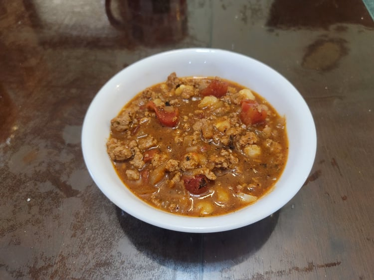

Hominy Stew

Ingredients:
- 1 lb Ground turkey
- 2 tbsp Sunflower oil
- 1 cup Wild onions, diced
- 3 cloves Garlic, minced
- 1 15 oz can Hominy, drained
- 1 10 oz can Tomato Sauce
- 1 15 oz can Diced tomatoes
- 1 cup Low sodium turkey stock or broth
- 1/2 tbsp Dried Mexican oregano
- 1 tbsp Chili powder
- 1 tsp Cumin
- Salt, to taste
- Optional: 1/4 tsp Cayenne pepper
Instructions:
- In a large pot, heat the oil over medium heat and sauté the onions until translucent, about 5 minutes. Then add in the garlic and sauté another minute.
- Add in the turkey and brown the meat until fully cooked. Break into small pieces with a wooden spoon.
- Add in the broth, both cans of tomatoes, oregano, chili powder, and cumin. Bring to a boil and then reduce to a simmer. Cook uncovered for 20-30 minutes, or until it reaches a desired consistency.
- Add in the salt and cayenne to taste. Serve immediately.